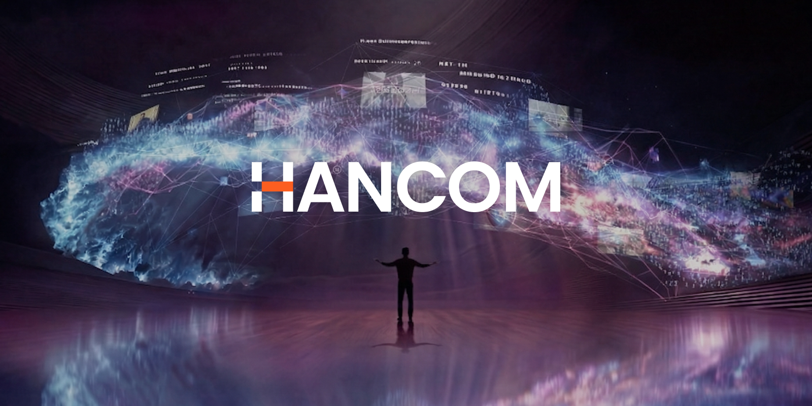

기술·전자 브랜드 109
제품, 인터페이스, 반도체, 디지털 생태계로 생활 방식을 바꾼 기술 브랜드를 봅니다. 브랜드 아틀라스에 수록된 기술·전자 브랜드 109개를 로고와 함께 모았습니다. 각 항목은 설립 배경, 브랜드 아이덴티티, 로고 변천, 제품과 서비스, 현재 상태를 정리한 상세 페이지로 이어집니다.
다른 산업 보기
기원 국가가 확인된 브랜드는 42개이며 한국 16개, 미국 11개, 일본 3개, 독일 2개, 영국 2개 순으로 많습니다. 설립연도가 확인된 브랜드는 47개이며 가장 오래된 곳은 1847년, 가장 최근은 2025년에 시작했습니다. 시기별로는 1900년 이전 1개, 1900~1949년 4개, 1950~1999년 21개, 2000년 이후 21개입니다. 수록 자료로는 로고 이미지 99개, 로고 변천 자료 9개, 연혁 타임라인 86개를 갖췄습니다. 이 가운데 24개는 공식 웹사이트가 일치하는 위키데이터 개체로 연결해 두었습니다.
기술·전자 브랜드 목록
품질 점수 순 상위는 로고 타일로, 나머지는 가나다순 목록으로 보입니다.
 제록스XEROX미국 · 1906년
제록스XEROX미국 · 1906년제록스(Xerox)는 1906년 미국에서 창립해 제로그래피 기반 복사기로 사무 문서 산업을 개척한 문서장비 기업이다.
시스코 시스템즈(Cisco Systems)는 라우터·스위치 등 네트워킹 장비와 사이버보안·협업 솔루션을 개발하는 미국의 IT 기업이다.
 올림푸스Olympus일본 · 1919년
올림푸스Olympus일본 · 1919년올림푸스(Olympus)는 1919년 일본에서 광학기기 제조사로 출발해 현재 내시경 등 의료기기를 핵심으로 하는 정밀기술 기업이다.
애플에게 혁신은 일회성 전략이 아니라 조직의 습관처럼 반복되는 브랜드 행동이다.
 뱅앤올룹슨Bang & Olufsen덴마크 · 1925년
뱅앤올룹슨Bang & Olufsen덴마크 · 1925년뱅앤올룹슨은 오디오를 가전제품이 아니라 공간 속 오브제로 다루는 브랜드다.
 지멘스SIEMENS독일 · 1847년
지멘스SIEMENS독일 · 1847년지멘스(Siemens)는 1847년 베를린에서 창립해 산업자동화·전기·철도·의료기술을 아우르는 독일의 다국적 산업·전기 기업이다.
 애널로그Analog
애널로그Analog애널로그(Analog)는 엣지 AI(Edge-AI)를 기반으로 인간의 잠재력을 확장하는 데 초점을 맞춘 기술·전자 분야 기업으로, 스페인…
 SK텔레콤SK Telecom한국 · 1984년
SK텔레콤SK Telecom한국 · 1984년SK텔레콤(SK Telecom)은 1984년 설립된 대한민국 최대의 이동통신 사업자로 SK그룹 계열사다.
 이스턴 항공Eastern Airlines미국
이스턴 항공Eastern Airlines미국이스턴 항공(Eastern Air Lines)은 1991년까지 운항한 미국의 항공사다.
인텔은 보이지 않는 부품을 소비자가 인식하는 브랜드로 만든 대표적 사례다.
 브리티시 레일British Rail1965년
브리티시 레일British Rail1965년브리티시 레일(British Rail)은 영국의 국유 철도망을 운영하던 사업자로, 1965년 통합 코퍼레이트 아이덴티티 체계를 도입했다.
 스위스에어Swissair스위스 · 1981년
스위스에어Swissair스위스 · 1981년스위스에어(Swissair)는 스위스의 옛 국적 항공사다.
 와이즈Wise영국 · 2011년
와이즈Wise영국 · 2011년와이즈(Wise)는 2011년 에스토니아 출신 크리스토 캐르만과 타베트 힌리쿠스가 영국 런던에서 창업한 핀테크로, 출범 당시 사명은…
 제미나이Gemini2023년
제미나이Gemini2023년제미나이(Gemini)는 구글이 개발한 생성형 AI 모델군이자 대화형 어시스턴트로, 알파벳 산하 구글 딥마인드(Google DeepMind)가…
 캐나다 국철Canadian National Railway캐나다 · 1959년
캐나다 국철Canadian National Railway캐나다 · 1959년캐나다 국철(Canadian National Railway, CN)은 캐나다의 대형 철도 기업이다.
 휴즈 에어웨스트Hughes Airwest
휴즈 에어웨스트Hughes Airwest휴즈 에어웨스트(Hughes Airwest)는 하워드 휴즈의 서마 코퍼레이션이 소유했던 미국의 지역 항공사다.
 모질라Mozilla
모질라Mozilla모질라(Mozilla)는 인터넷을 자유롭고 개방적이며 누구나 접근 가능하게 유지하는 것을 사명으로 25년 넘게 활동해 온 비영리 중심의 기술…
 비자Visa미국 · 1958년
비자Visa미국 · 1958년비자는 전 세계 카드 결제를 중계하는 미국의 결제 네트워크 기업이다.
 스포티파이Spotify스웨덴 · 2006년
스포티파이Spotify스웨덴 · 2006년스포티파이는 2006년 스웨덴 스톡홀름에서 설립된 세계 최대 규모의 음악 스트리밍 서비스다.
 아메리칸 항공American Airlines
아메리칸 항공American Airlines아메리칸 항공(American Airlines)은 미국을 대표하는 대형 항공사 중 하나로, 본사를 텍사스주 포트워스에 두고 있으며 운항 규모…
 드롭박스Dropbox2007년
드롭박스Dropbox2007년드롭박스는 2007년 드루 휴스턴과 아라시 페르도시가 MIT 재학 중 설립한 클라우드 스토리지·파일 동기화 서비스로, 여러 기기와 위치에서…
 로블록스Roblox
로블록스Roblox로블록스(Roblox)는 이용자가 직접 게임과 가상 경험을 제작하고 함께 즐길 수 있는 온라인 게임·제작 플랫폼으로, 데이비드 바수츠키와 에릭…
 빅 카르텔Big Cartel2005년
빅 카르텔Big Cartel2005년빅 카르텔은 2005년 미국 유타주 솔트레이크시티에서 매트 위검 등이 설립한 온라인 스토어 플랫폼이다.
 오스트리아 항공Austrian Airlines오스트리아
오스트리아 항공Austrian Airlines오스트리아오스트리아 항공(Austrian Airlines)은 오스트리아의 국적 항공사다.
 이소모픽 랩스Isomorphic Labs
이소모픽 랩스Isomorphic Labs이소모픽 랩스(Isomorphic Labs)는 구글 딥마인드에서 2021년 분사한 영국 런던 본사의 AI 신약개발 기업이다.
 일본항공Japan Airlines일본
일본항공Japan Airlines일본일본항공(Japan Airlines, JAL)은 일본의 대표 항공사다.
 코인베이스Coinbase미국 · 2012년
코인베이스Coinbase미국 · 2012년코인베이스(Coinbase)는 2012년 미국 샌프란시스코에서 설립된 암호화폐 거래 플랫폼으로, 비트코인을 비롯한 디지털 자산을 일반 사용자가…
 페이세이프Paysafe영국
페이세이프Paysafe영국페이세이프(Paysafe)는 영국에 본사를 둔 다국적 온라인 결제·디지털 지갑 기업이다.
 페이팔Paypal미국 · 1998년
페이팔Paypal미국 · 1998년페이팔은 1998년 미국에서 출발해 온라인 송금과 결제를 대중화한 핀테크 기업으로, 이베이 거래의 표준 결제 수단으로 성장한 뒤 독립 상장해…
 후지쯔Fujitsu
후지쯔Fujitsu후지쯔(Fujitsu)는 일본을 대표하는 종합 IT·전자 기업이다.
 마스터카드Mastercard1966년
마스터카드Mastercard1966년마스터카드는 1966년 미국 은행들이 결성한 인터뱅크 카드 협회에서 출발한 글로벌 결제 네트워크다.
 애프터페이Afterpay호주
애프터페이Afterpay호주애프터페이(Afterpay)는 호주에서 출발한 후불결제(BNPL, Buy Now Pay Later) 서비스로, 소비자가 상품을 즉시 구매한 뒤…
 팬암Pan Am미국
팬암Pan Am미국팬암(Pan American World Airways)은 1927년부터 1991년까지 운항한 미국의 항공사로, 한때 미국의 비공식 국적기로…
 퍼플렉시티 AIPerplexity미국
퍼플렉시티 AIPerplexity미국퍼플렉시티 AI는 미국 샌프란시스코에 본사를 둔 AI 기반 대화형 검색 서비스로, 질문에 직접 답하면서 그 근거가 된 출처를 함께 인용하는…
필립스는 기술을 과시하기보다 생활을 더 단순하고 건강하게 만드는 방향으로 브랜드 의미를 확장해 왔다.
 메일침프Mailchimp
메일침프Mailchimp메일침프는 미국의 이메일 마케팅 및 디지털 마케팅 플랫폼이다.
 뮌헨 공항Munich Airport
뮌헨 공항Munich Airport뮌헨 공항(Flughafen München, MUC)은 1992년 5월 17일 기존 뮌헨-림 공항을 대체하며 개항한 독일의 공항이다.
 패컬티Faculty AI
패컬티Faculty AI패컬티는 2014년 마크 워너와 앤지 마, 앤디 브룩스가 런던에서 어드밴스드 스킬스 이니셔티브라는 이름으로 박사급 인재 펠로십 프로그램으로…
 다이에이Daiei일본 · 1957년
다이에이Daiei일본 · 1957년다이에이(Daiei)는 1957년 나카우치 이사오가 오사카에서 창업한 일본의 슈퍼마켓·종합 소매 체인으로, 1972년 미쓰코시 백화점을 제치고…
 리프트Lyft
리프트Lyft리프트는 2012년 미국에서 출범한 승차공유 서비스로, 스마트폰 앱을 통해 운전자와 승객을 실시간으로 연결한다.
 메이테쓰Meitetsu
메이테쓰Meitetsu메이테쓰(名鉄, 정식 명칭 나고야 철도)는 일본 아이치현 나고야를 거점으로 기후현 일원까지 노선망을 펼친 대형 사철이다.
 미니MINI
미니MINI미니는 작은 크기를 약점이 아니라 개성과 태도의 언어로 바꾼 자동차 브랜드다.
 노르웨이를 대표하Norwegian2002년
노르웨이를 대표하Norwegian2002년노르웨이를 대표하는 저비용 항공사로, 2002년 보잉 737로 본격 운항을 시작해 스칸디나비아에서 두 번째로 큰 항공사이자 유럽의 주요 저비용…
 토스Toss
토스Toss토스(Toss)는 비바리퍼블리카가 운영하는, 간편 송금을 시작으로 결제·대출·증권·보험을 아우르는 모바일 종합 금융 슈퍼앱이다.
 버라이즌 와이어리스Verizon Wireless미국 · 2000년
버라이즌 와이어리스Verizon Wireless미국 · 2000년버라이즌 와이어리스(Verizon Wireless)는 미국 최대 규모의 이동통신 서비스 사업자이다.
 직방Zigbang
직방Zigbang직방(Zigbang)은 대한민국의 부동산 중개·정보 플랫폼을 운영하는 프롭테크 기업이다.
 두나무Dunamu한국 · 2012년
두나무Dunamu한국 · 2012년두나무(Dunamu)는 한국 1위 암호화폐 거래소 업비트(Upbit)를 운영하는 핀테크·블록체인 기업으로, 2012년 송치형이 창업했다.
 더존비즈온Douzone Bizon한국
더존비즈온Douzone Bizon한국더존비즈온(Douzone Bizon)은 ERP·회계 소프트웨어와 클라우드 플랫폼을 제공하는 한국의 대표 기업용 SW 기업이다.
전체 목록

한글과컴퓨터 Hancom아래아한글을 만든 국산 워드프로세서 기업